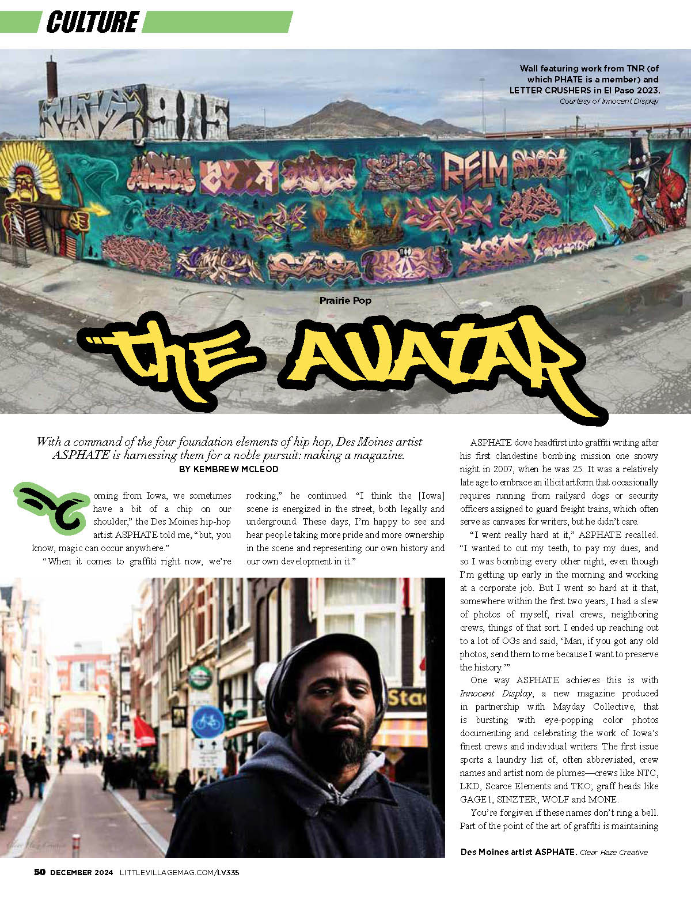

Little Village

After graduating in May 2024 I sent a portfolio and a resume to Little Village, and a couple of months after that I got my first (and only) freelance assignment. With some luck and a good word from a former teacher of mine, I landed a part-time graphic design job that turned full-time a few months later.